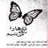

پذيرش > سایت نوشته ها > دیالوگ سالانه زنان در سمینار آلمان/زهره رحمانیان – شهرزاد نیوز


 دیالوگ سالانه زنان در سمینار آلمان/زهره رحمانیان – شهرزاد نیوز دیالوگ سالانه زنان در سمینار آلمان/زهره رحمانیان – شهرزاد نیوز
12 بهمن 1386 - - نسخه قابل چاپ
شهرزاد نیوز: اجرای رقص گیلانی، آغاز گر سمینار سراسری سالانه ی تشکل های زنان دگر- و هم جنس گرای ایرانی در آلمان بود که در روزهای 18 تا 20 ژانویه 2008 در شهر برلین با حضور تقریبی 120 زن شرکت کننده برگزار شد. موضوع سمینار" کجا ایستاده ایم، چه می خواهیم، جنبش زنان ایرانی: افقها، چشم اندازها" بود.
پس از خیرمقدم توسط فریده زبرجد، اولین مبحث سمینار، که میزگردی در مورد بررسی و نقد کمپین یک میلیون امضا بود با شرکت مهناز متین، عفت ماهباز و شادی امین برگزار شد. سخنران دیگری که نتوانسته بود در میزگرد شرکت کند، ناهید نصرت، متن سخنرانی اش را به جلسه ارائه داده بود.
ناهید نصرت در نوشته خود از کمپین حمایت کرده و گفته بود: «حقانیت هر جنبش را باید در خواست هایش نگاه کرد». از نظر ناهید نصرت کمپین جنبشی است برابری طلب زیرا در شرایطی که فاشیسم مذهبی در ایران حاکم است، کمپین از مسئولین مملکت می خواهد قوانینی را که دستاورد انسانی اند، تصویب کنند. نصرت شیوه ی مسالمت آمیز را از مشخصه های کمپین برشمرده و آن را تلاشی دیده بود زنانه، بدون هیرارشی و بدون خشونت. جنبشی که بر پایه ی آگاهی به نیازها و حقوق فردی شکل گرفته و می تواند بخشی از زنان (زنان اقشار متوسط و مرفه) را با خود همراه کند. یکی از محورهای عدم توافق نصرت، بها ندادن کمپین به مسأله ی حجاب و نداشتن حساسیت لازم توده ی جوان به این مسأله بود.
سخنران بعدی میزگرد کمپین یک میلیون امضا مهناز متین بود. او با نقد کلیات طرح کمپین گفت که به گفته ی آنها خواست کمپین برای تغییر قوانین تبعیض آمیز ضدیتی با مبانی اسلام ندارد. وی در مورد خواست زنان برای برابری دیه ی زن و مرد بر این باور بود که این در واقع پذیرش قانون قصاص و مجازات اسلامی است. متین سپس با استناد به نظر کاوه مظفری، یکی از فعالین مرد کمپین که به وجود دو گرایش در نیروهای تشکیل دهنده ی کمپین، یعنی گرایش نواندیشی دینی و تجسم اش در فمینیستهای مسلمان و گرایش دیگر فمینیستهای سکولار و موضع خنثی نسبت به اسلام، گفت: «موضع خنثی داشتن، به نظر و به باور من، استناد نکردن به مبانی اسلام است و موظف ندانستن خود به اینکه بخواهیم ثابت کنیم یا تأکید کنیم که خواست های ما برای رفع قوانین تبعیض آمیز ضدیتی با اسلام ندارد». مهناز متین ادامه داد: " کمپین عرصه ای شده برای تبادل نظر و بحث و گفتگوی جریانات مختلف مذهبی. امروز صدای جریان فمینیسم مسلمان است که بر کمپین غالب است. دوستان! انتظار می رفت که صدای زنان سکولار پژواک بیشتری داشته باشد. آنها به کسانی که کمپین را امضا نمی کنند لقب هایی چون روشنفکران پرمدعا، ناامیدان، بی خیالان، جزم اندیشان مذهبی ،سیاست گریزان و ... می دهند. باید از آنها پرسید: «آیا در این میان کسی نبوده که این کاره نباشد و مخالفت اصولی داشته باشد»؟
میزگرد با سخنرانی عفت ماهباز ادامه یافت. او متذکر شد: «اکثریت نیروی کمپین را نیروهای جوانی تشکیل می دهند که اغلب در زمان انقلاب به دنیا آمده و 20 تا 30 ساله اند. اینها با اسلام بزرگ شده اند. اینها با اسلام زندگی کرده اند. مسأله و مشکلی که اینگونه در ذهن ماست، ندارند». امروز نیروی جوان مبارزه می کند. این نیرو تغییر دیگری را می خواهد ایجاد کند. وی مشکل زنان نخبه گرا را تا کنون مشکل صدساله ی جنبش دانست. پس حضور تمامی زنان برای خواسته های متفاوتشان در ایران لازم بود. در رابطه با کار کمپین اضافه کرد که مبنای کار بر اساس آخرین دستاوردهای حقوق بشری است. یعنی قانون خانواده، نه همه ی قوانین تبعیض آمیز. اینکه چند درصد آن سکولار است یا مذهبی، مهم نیست. بلکه مهم فعالیت آنهاست. او با اشاره به آمار کمپین گفت که 8/18% مردم از کار کمپین اطلاع دارند. که از این تعداد تنها 2% از طریق اینترنت توانسته بودند با کار کمپین آشنا شوند.
آخرین سخنران این میزگرد شادی امین بود. او در آغاز سخنانش گفت: «به نظر من یک جعل تاریخی دارد صورت می گیرد، آنجا که گفته می شود برای اولین بار است که به خیابانها می رویم. که برای اولین بار است رژیم به این شدت سرکوب می کند. که برای اولین بار است که زنان کوچه به کوچه می روند و با زنان صحبت می کنند. هدف از این جعل تاریخی پاک کردن سابقه ی 30 سال جنبش زنان است». در این رابطه او به جنبش زنان در سه هفته بعد از ورود جمهوری اسلامی اشاره کرد که زنان به خیابان آمدند و علیه جمهوری اسلامی مبارزه کردند. وی اضافه کرد که اگر ما باور نداشته باشیم که جمهوری اسلامی از بدو ورودش سرکوب کرده، آنوقت باور می کنیم که امروز باید حزب مشارکت اسلامی مسئولیت پیشبرد جنبش زنان را به عهده بگیرد. سپس با اشاره به نظر نوشین احمدی خراسانی در کتاب «جنبش یک میلیون امضا» افزود که نوشین احمدی خراسانی خیلی روشن اعلام می کند که تخاصم بین مردم و دولت را می خواهند بزدایند. او ( احمدی خراسانی) بر این نظر است که کسانی که آنها را به ضدیت با اسلام متهم می کنند یا اینکه از آنها می خواهند علیه اسلام موضع بگیرند، دارند به یک تخاصم دامن می زنند. در واقع نوشین خراسانی با این حرف یک آشتی را تبلیغ می کند.
سمینار روز شنبه 19 ژانویه با یادی از شیوا بنی فاطمی به کار خود ادامه داد. نقاش و هنرمندی که در اکتبر 2007 زندگی را به درود گفت. با پخش فیلم کوتاه Rosarot و سخنانی از این نقاش و هنرمند، اندوهی سنگین فضای سمینار را در برگرفت.
سخنرانان بعدی، سرور صاحبی و اقدس شعبانی بودند که در باره ی موضوع «نقد و بررسی جنبش زنان ایرانی در داخل و خارج و تأثیر متقابل آن بر یکدیگر» صحبت کردند.
صاحبی در پیش گفتارش خاطرنشان ساخت: «تا زمانی که زنان بر مبنای طرح های مردانه عمل کنند تغییر اساسی رخ نخواهد داد». او سپس به مقوله های «داخل» و «خارج» و جنبش زنان ایران و تفاوت میان راهکارها پرداخت و گفت: «از نگاه من رابطه ی جنبش زنان ایران در خارج، با جنبش زنان ایران، رابطه ای است بر اساس تفاوت، نه تقابل». وی بر کار محلی و دخالت گر زنان در جامعه ی میزبان تأکید ورزید.
صاحبی جنبش زنان ایران را به سه دوره تقسیم کرد: 1- دو سال نخست انقلاب. در این دوره دو رویداد مهم از سوی زنان اتفاق افتاد که یکی تظاهرات زنان در هشتم مارس 1979 برابر با 17 اسفند 1357 و دیگری پدید آمدن اتحاد ملی زنان در 8 فروردین 1358.
2- پس از تثبیت جمهوری اسلامی. او تثبیت جمهوری اسلامی را سال 1370 دانست. وی تغییر و تحولات مبارزات زنان در این دوره را چنین برشمرد: ـ نهادها و کمیسیون های زنانه از جمله «کمیسیون امور بانوان وزارت کشور» سال 1369. ـ انتشار نشریه ی زنان در سال 1370 ـ «گاهنامه ی فرزانه» سال 1372. ـ مجله ی «حقوق زن» در سال 1377 ـ ایجاد محفل های زنان غیرمذهبی از چپ گرفته تا زنان مدرن شهری در خانه ها.
3- پس از جریان اصلاحات: وی به مرحله ی بعدی حرکت زنان در این دوره، جنبش زنان غیرمذهبی از سال 1376 تا کنون، اشاره کرد. این دوره فعالیتهایی چون «مرکز فرهنگی زنان، سال 1379»، نشریاتی چون جنس دوم، فصل زنان (به جای جنس دوم)، نامه ی زن، نگاه زنان و وبلاگهای گوناگون از جمله تریبون فمینیستی، زنستان، هستیااندیش و کانون زنان ایرانی تا «جنبش زنان یک میلیون امضا» را در برمی گیرد. از جمله فعالیتهای عملی این دوره می توان به برگزاری هشت مارس در سال 1378 (نخستین برگزاری بعد از سال 1357)، برگزاری هشت مارس در سال 1379، جمع آوری امضا برای الحاق به کنوانسیون رفع تبعیض علیه زنان در سال 1379 و میتینگ برای «همبستگی با زنان فلسطین» روبروی سفارت فلسطین در سال 1381.
محورهای مورد بحث شعبانی ویژگی جنبش زنان، حس بیگانگی و زن، زن ایرانی در تبعید و تأثیر جنبش زنان «داخل» و «خارج» بر یکدیگر بود.
او چند ویژگی از جنبش زنان را برشمرد از جمله: ـ جنبش زنان فرامنطقه ای، فراطبقاتی، صلح جو، پیچیده، نازک و سیال، زیکزاکی و روزمره است ـ این جنبش هیچ نسخه و ایدئولوژی و روندی از پیش تعیین شده ندارد ـ جنبش زنان غیرمتمرکز و غیرهرمی ست.
وی با نگاهی به تاریخ تبعید زن در عهد عتیق، گفت که نخستین بیگانه زنی بوده به نام دانائه که در اسطوره های یونانی "ایو "نامیده می شود. همچنین "سافو"، زن شاعر یونانی که سمبل زنان تبعیدی ست. شعبانی سپس به فعالیت سیاسی بخشی از زنان در خارج از کشور پرداخت. آغاز این فعالیت با فراخوانی توسط مسعوده آزاد، در پاییز 1359 آغاز شد. این فراخوان علیه زن ستیزی جمهوری اسلامی و اعتراض به حجاب اجباری بود.
شعبانی در ادامه گفت که زن ایرانی در تبعید حرکت در کاروانی را آغاز کرد که خود ساربانش بود. وی تلاشهای تحقیقی شهین نوایی را در مورد روند و جمع بندی جنبش زنان خارج از کشور قدر دانست.
او با نگاهی به جنبش مستقل زنان گفت: «به باور من جنبش مستقل زنان در خارج توانست برای اولین بار مفهوم جنسیت و تاکید بر آن را در فرهنگ سیاسی ایرانی وارد کند. متمرکز بودن زنان روی کار مستقل و پیگیری کم نظیرشان در 27 سال گذشته (به وجود آمدن 162 تشکل زنان)، حرکت این کاروان راسرعت بخشید». وی در بخش پایانی سخنرانی اش به تأثیر جنبش زنان «داخل» و «خارج» بر یکدیگر پرداخت. از این سو قلم زدن زنان خارج از کشور از جمله بکری تمیزی، ترجمه ی کارهای هایده مغیثی ، افسانه نجم آبادی، پروین اردلان ، الهه امانی و ... در مطبوعات ایران. همچنین رفتن زنان از خارج به ایران و تدریس در بخش مطالعاتی زنان. از آن سو حضور میهمانان سخنران ایرانی در کنفرانس بنیاد پژوهشها».
سخنران بعدی سعیده ی سعادت بود. او در مورد فرهنگ خشونت، زبان خشونت، خشونت در فرهنگ و زبان سخن گفت. وی خشونت را چنین تعریف کرد: « خشونت ابزاری است برای وادار کردن انسان به اطاعت از خود، ایده ها یا ایده آلهای خود. خشونت ابزاری است برای محدود کردن آزادی دیگران در فرم دادن به علایق و زندگیشان». او اضافه کرد که خشونت در دنیای مدرن تعریف دیگری غیر از کلاسیک دارد و آن شکلهایی است که آزادی را محدود کرده و ما را وادار به توهین کردن، بی احترامی کردن، تحقیر و اتهام زدن و ... می کند. در این زمینه او با نام بردن از دو نظریه پرداز قرن هفدهم نظریه هاشان را پایه های دولتهای مدرن دانست. نظریه هایی که بر مبنای آزادی انسانی و خصوصی شدن وجدان و اخلاق بود. سپس از گاندی یاد کرد که نظریه اش تأکید بر حقوق انسانی و احترام به انسان مخالف و حقوق آنهاست. سعادت متذکر شد که روشنگری در دوره ی مدرن امیدش را بر دیالوگ گذاشت. اما در حد آکادمیک باقی ماند.
موضوع بعدی ماورای فرهنگ و هویت ملی بود. این سخنرانی توسط شبنم مهرانگیز، جوانی از نسل دو که در آلمان زندگی و تحصیل می کند، انجام گرفت. سخنرانی به زبان آلمانی بود که توسط شادی امین ترجمه شد. او با نقل چند خاطره از خود به نقش دو زبانه بودن و استفاده از زبان فارسی و آلمانی در موقعیتهای مختلف در کودکی اش پرداخت. در ادامه ی صحبت ضمن اشاره به حملات راسیسم به خارجیها در آلمان گفت که او آن زمان فهمید "آن جایی" را که پدر و مادرش می گفتند. "آن جا" به اینجا (آلمان) آمد. این سخنرانی احساس بسیاری از زنان شرکت کننده را برانگیخت.
عصر روز شنبه دو گروه کاری تشکیل شد. 1ـ گروه کاری در مورد خشونت 2ـ گروه کاری در مورد میزگرد کمپین و جنبش زنان داخل و خارج. زنان علاقه مند به هر موضوع در اتاقهایی جداگانه به بحثهایی مفصل در این دو زمینه پرداختند.
شنبه شب برنامه هنری بود که با شعرخوانی سهیلا میرزائی آغاز شد. این اشعار مورد توجه بسیاری از شرکت کنندگان قرار گرفت.
سپس "نشیب ها و فرازها" (پرفورمنس از میترا زاهدی) به اجرا درآمد. بازی گر این پرفورمانس شریفه بنی هاشمی بود. متن پرفورمانس را اشعار کلاسیک، سپید و مدرنی تشکیل می دادند که میترا زاهدی آنها را ادغام و تنظیم کرده بود. خوانش این اشعار نیز توسط او انجام گرفت. برنامه از طرف زنان شرکت کننده مورد توجهی فوق العاده خاص قرار گرفت. پخش موزیک و رقص زنان تا دیروقت شب ادامه داشت.
روز یکشنبه قرار بود سیمین نصیری، پروژه ی تلفن اضطراری علیه ازدواج اجباری در ایالت نیدرزاکسن( آلمان) را معرفی کند. اما به علت عدم شرکت او در این جلسه، این معرفی از طریق فردوس میرآبادی انجام گرفت. در اینجا گفته شد که در فوریه 2006 مجلس ایالتی نیدرزاکسن بر اساس تقاضای سبزها دولت را موظف کرد که تا پایان سال طرحی برای مبارزه با ازدواج اجباری تهیه و به مجلس ارائه کند.
بعد از آن پیشنهادات و انتقادات شرکت کنندگان بود. عده ای نظرات خود را در مورد این سمینار مطرح کردند. در مجموع بسیاری از زنان شرکت کننده، سمینار را پربار می دانستند. درصد بالایی از زنان شرکت کننده بحث کمپین و جنبش زنان داخل و خارج و رابطه ی متقابل آنها را جالب، عمیق و جدید ارزیابی کردند.
سمینار سال آینده در شهر کلن برگزار خواهد شد. کمیته ی برگزاری سمینار شهر کلن از میان موضوعات پیشنهادی، موضوعی را برای سمینار سال آینده انتخاب کرده و برای علاقمندان خواهد فرستاد.
فضای سمینار دوستانه بود. تبادل نظر و دیالوگ در زنان قوی تر از سالهای پیش بود. بعضی از سخنرانان کارشان را جدی گرفته و با دستی پر برای سخنرانی آمده بودند، و برخی بسنده کرده بودند به تجربه های شخصی خودشان.
شهرزاد نیوز
ارسال به
بالاترین
،
توییتر
،
فریندفید
،
فیسبوک
در همين بخش :
 یک خبر تلخ؟ یک قانونشکنی؟ یک تصمیم بخشنامهای جدید؟ یک خبر تلخ؟ یک قانونشکنی؟ یک تصمیم بخشنامهای جدید؟
چرا بایست به سکسوالیته پرداخت؟ / نفیسه آزاد
آزارجنسی خانگی؛ «قربانی» نه، «نجات یافته»
زنان، بزرگترین بازندگان بهار عرب
سانسور از دیدگاه جنسیتی/الهه امانی
ديگر بخش ها :
طرح یک میلیون امضا
|
مقالات
|
سایت نوشته ها
|
اخبار
|
گزارش كمپين
|
گفت و گو
|
علیه سکوت
|
كوچه به كوچه
|
نامه های شما
|
گزارش ویژه
|
گفتگو با اعضا
|
ویژه سالگرد کمپین
|
تصویر برابری
|
دل آرام علی
|
تریبون
|
مقالات
|
تاریخ شفاهی
|
خارج از چارچوب
|
کتابخانه
|
درباره کمپین
|
کمپین در شهرها
|
کمپین در بند
|
صدای تغییر
|
ویژه 22 خرداد
|
لایحه حمایت از خانواده
|
گالری
|
عشا مومنی
|
امیر یعقوبعلی
|
خدیجه مقدم
|
راحله عسگری زاده و نسیم خسروی
|
پروین اردلان،جلوه جواهری، مریم حسین خواه، ناهید کشاورز
|
زینب پیغمبرزاده
|
سعیده امین، سارا ایمانیان، محبوبه حسین زاده، ناهید کشاورز و همایون نامی
|
احترام شادفر
|
نسیم سرابندی زاده،فاطمه دهدشتی
|
وبلاگ مهمان
|
پرونده خرم آباد
|
دستگیری ها
|
مریم مالک
|
پرستو اللهیاری
|
مهرنوش اعتمادی
|
سمیه رشیدی
|
Other Languages
|
همراهان
|
«فراخوان کمپین ده روز با بهاره هدایت»
| English
|